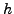
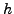

We revisit an early 90's technique due to Golub and Tuminaro, originally
suggested for two-dimensional convection-diffusion. The idea is to
perform a single cyclic reduction step before reverting to multigrid. We
generalize this idea and introduce a novel smoothing analysis for the
resulting problem, which yields explicit analytical results. In
particular, we prove for 2 +1 point "star" stencils, where
+1 point "star" stencils, where  is the
dimension, that the suitably defined -ellipticity measure is always
increased by the cyclic reduction step for symmetric
is the
dimension, that the suitably defined -ellipticity measure is always
increased by the cyclic reduction step for symmetric  -matrices.
Additionally, we introduce a novel relaxation method employing a cyclic
reduction step, dubbed cyclic reduction relaxation (CRR), and analyze its
smoothing properties, which turn out to be exceptional. Numerical
computations show a close agreement between the smoothing analysis
results and actual V-cycle convergence factors.
-matrices.
Additionally, we introduce a novel relaxation method employing a cyclic
reduction step, dubbed cyclic reduction relaxation (CRR), and analyze its
smoothing properties, which turn out to be exceptional. Numerical
computations show a close agreement between the smoothing analysis
results and actual V-cycle convergence factors.